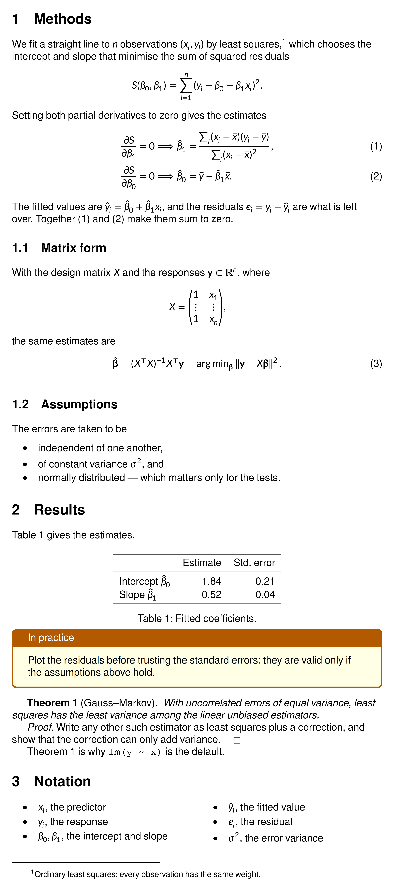

With input_mode = "document", grid.latex()
sets a LaTeX document: paragraphs, headings, displayed equations, lists,
tables, theorems and the packages it loads. Use it for a methods
section, an appendix or a long caption, with no LaTeX installation. For
a complicated document, see the end.
A document
This is a whole file, as it would be given to LaTeX: a preamble that
loads packages and makes definitions, then the body. The preamble is
read for what it defines and draws nothing;
\usepackage{physics} gives the derivatives, vectors and
matrices used in the body.
doc <- r"(\documentclass{article}
\usepackage{amsmath, amssymb, amsthm}
\usepackage{physics}
\usepackage{tcolorbox, multicol}
\newtheorem{thm}{Theorem}
\newcommand{\RR}{\mathbb{R}}
\begin{document}
\section{Methods}
We fit a straight line to $n$ observations $(x_i, y_i)$ by least
squares,\footnote{Ordinary least squares: every observation has the
same weight.} which chooses the intercept and slope that minimise the sum
of squared residuals
\[ S(\beta_0, \beta_1) = \sum_{i=1}^{n} (y_i - \beta_0 - \beta_1 x_i)^2. \]
Setting both partial derivatives to zero gives the estimates
\begin{align}
\pdv{S}{\beta_1} = 0 &\implies \hat\beta_1 = \frac{\sum_i (x_i - \bar x)(y_i - \bar y)}{\sum_i (x_i - \bar x)^2}, \label{slope} \\
\pdv{S}{\beta_0} = 0 &\implies \hat\beta_0 = \bar y - \hat\beta_1 \bar x. \label{intercept}
\end{align}
The fitted values are $\hat y_i = \hat\beta_0 + \hat\beta_1 x_i$, and
the residuals $e_i = y_i - \hat y_i$ are what is left over. Together
\eqref{slope} and \eqref{intercept} make them sum to zero.
\subsection{Matrix form}
With the design matrix $X$ and the responses $\vb{y} \in \RR^n$, where
\[ X = \mqty(1 & x_1 \\ \vdots & \vdots \\ 1 & x_n), \]
the same estimates are
\begin{equation}
\hat{\vb*{\beta}} = (X^\top X)^{-1} X^\top \vb{y}
= \arg\min_{\vb*{\beta}} \norm{\vb{y} - X\vb*{\beta}}^2 .
\end{equation}
\subsection{Assumptions}
The errors are taken to be
\begin{itemize}
\item independent of one another,
\item of constant variance $\sigma^2$, and
\item normally distributed --- which matters only for the tests.
\end{itemize}
\section{Results}
Table~\ref{coef} gives the estimates.
\begin{table}[h]
\centering
\begin{tabular}{lrr}
\toprule
& Estimate & Std.\ error \\
\midrule
Intercept $\hat\beta_0$ & 1.84 & 0.21 \\
Slope $\hat\beta_1$ & 0.52 & 0.04 \\
\bottomrule
\end{tabular}
\caption{Fitted coefficients.}\label{coef}
\end{table}
\begin{tcolorbox}[title=In practice, colback=yellow!10, colframe=orange!70!black]
Plot the residuals before trusting the standard errors: they are
valid only if the assumptions above hold.
\end{tcolorbox}
\begin{thm}[Gauss--Markov]\label{gm}
With uncorrelated errors of equal variance, least squares has the least
variance among the linear unbiased estimators.
\end{thm}
\begin{proof}
Write any other such estimator as least squares plus a correction, and
show that the correction can only add variance.
\end{proof}
Theorem~\ref{gm} is why \verb|lm(y ~ x)| is the default.
\section{Notation}
\begin{multicols}{2}
\begin{itemize}
\item $x_i$, the predictor
\item $y_i$, the response
\item $\beta_0, \beta_1$, the intercept and slope
\item $\hat y_i$, the fitted value
\item $e_i$, the residual
\item $\sigma^2$, the error variance
\end{itemize}
\end{multicols}
\end{document})"max_width is the text width in big points (1/72
inch):
grid.newpage()
grid.latex(doc, input_mode = "document", max_width = 5.6 * 72,
x = 0.03, y = 0.985, hjust = 0, vjust = 1,
gp = gpar(fontsize = 11))
How a document is read
As in LaTeX:
-
Preamble. Everything before
\begin{document}is read for what it defines, such as\usepackage,\newcommand,\newtheoremand\definecolor, and draws nothing. What follows\end{document}is not read. A document without a preamble is read from its first line. -
Paragraphs. A blank line or
\parstarts a new, indented paragraph.\noindentsuppresses the indent. -
Headings.
\section,\subsectionand\subsubsectionare numbered; starred forms are not. -
Math.
$...$and\(...\)are inline.\[...\],$$...$$,equation,align,gatherandmultlineare centred on their own line. The last four are numbered at the right margin, a row each (multline: one), unless starred or marked\notag;\tag{x}sets a number, and\labelwith\ref,\eqref,\crefor\autorefrefer to it (\crefnames what it refers to: “eq. (1)”, “fig. 2”, “section 3”).subequationsnumbers its equations 1a, 1b, …, andnumcases{left side}is a brace of cases with a number each. -
Lists and tables.
itemize,enumerate,descriptionandtabularhold text, with math between$...$. -
Theorems.
\newtheoremdeclares them, with the shared and[section]counters and a starred, unnumbered form;proofends with a box. -
Footnotes and floats.
\footnoteleaves a raised number in the text and sets the note after the body, with a rule above it. Atableorfigureis set where it is written, its\captionnumbered “Table 1:” or “Figure 1:”, and thesubfigureandsubtableof subcaption are lettered “(a)”. -
Boxes and columns.
tcolorboxdraws a framed box, withtitleand the colour keys, andmulticols{n}sets its body innbalanced columns. -
Text.
--and---are dashes, quotes are curly, and~is a non-breaking space.\centeringandcentercentre lines.\textscsets small capitals, and\verbandverbatimset code as it is typed.
Problems produce one warning, listing each with its line and column.
Justified text
justify = TRUE fills every line but the last, and
line_break = "optimal" chooses the breaks for the whole
paragraph:
para <- r"(Least squares has a closed form, which is why it was the
method of choice long before computers made iterative fitting cheap. It
is also optimal among unbiased linear estimators when the errors are
uncorrelated with equal variance: the Gauss--Markov theorem.)"
grid.newpage()
grid.latex(para, input_mode = "document", max_width = 5.6 * 72,
justify = TRUE, line_break = "optimal",
x = 0.03, y = 0.95, hjust = 0, vjust = 1,
gp = gpar(fontsize = 11))Saving a PDF
Use cairo_pdf() so the text can be selected.
latex_dims() gives the height to size the page:
d <- latex_dims(doc, input_mode = "document", max_width = 5.5 * 72,
gp = gpar(fontsize = 11))
height <- as.numeric(d$height) / 72 + 1 # inches, with margins
cairo_pdf("methods.pdf", width = 6.5, height = height)
grid.latex(doc, input_mode = "document", max_width = 5.5 * 72,
x = unit(0.5, "in"), y = unit(1, "npc") - unit(0.5, "in"),
hjust = 0, vjust = 1, gp = gpar(fontsize = 11))
dev.off()A document is drawn as one piece and does not flow onto a second page. Split a long one at paragraph breaks and draw each part on its own page.
Packages and commands of your own
\usepackage does not read the packages of a TeX
installation. The commands of the usual ones, such as amsmath,
mathtools, braket and physics, are part of gridmicrotex, in small files
written for it, and \usepackage{physics} loads one of them.
Most are already loaded, so \usepackage{amsmath} changes
nothing and can stay in a pasted preamble. physics has to
be asked for, as in the example above, because it changes
\qty, \bra, \ket and
\div. A package that gridmicrotex does not have is ignored,
without a warning.
To add commands of your own, put them in a .sty file,
which load_sty() makes a package. The bundled files, in
system.file("tex", package = "gridmicrotex"), are examples
of how to write one:
sty <- tempfile(fileext = ".sty")
writeLines(c("\\newcommand{\\RR}{\\mathbb{R}}",
"\\NewDocumentCommand{\\norm}{m}{\\left\\lVert #1\\right\\rVert}"), sty)
load_sty(sty, name = "mymath")
grid.newpage()
grid.latex(r"(\usepackage{mymath} $f\colon \RR^n \to \RR, \quad \norm{x} \ge 0$)",
x = 0.5, y = 0.5, gp = gpar(fontsize = 13))latex_options(packages = "mymath") loads it before every
label. A file holds definitions, with \newcommand,
\def, \newenvironment,
\NewDocumentCommand, \newif and the
\if tests; registers, boxes and \catcode are
not supported, so a package from CTAN usually cannot be copied in as it
is.
Limitations
- A package from a TeX installation is not read.
-
\pagerefdraws??, with a warning.\citedraws the number of its\bibitem, so athebibliographyin the same text is cited; a key none names draws[?], with a warning, and so does a\refto a label that is not there. - A footnote in a label, not a document, is set where it is written, with a warning.
- Tables and figures are placed where they are written.
-
lstlisting,mintedandVerbatim(and\lstinline,\mintinline) set their code as typed, in the typewriter face, with none of their colours, line numbers or frames; markdown highlights code if that is what you want. - Algorithms (
algorithm,algorithmic) are not drawn. -
\maketitlesets the title, authors and date, centred and on no page of its own;\dateis today’s date when none is given, as in LaTeX.
For a complicated document, with packages from a TeX installation, pages, floats that move, or all of TikZ, use the xdvir package, which typesets with LaTeX itself and draws the result in grid.